Bloons TD 6
Introduçao
O jogo bloons TD 6, tendo como o nome completo bloons tower defense 6, é um jogo onde o objetivo principal é defender a torre
dos balões que andam pelo caminho utilizando torres que são macacos ou objetos independentes.
O jogo é o sexto jogo da franquia bloons, sendo o mais famoso entre todos. Atualmente o jogo contém 18 heróis, 26 macacos e 88 mapas.
Agora vamos averiguar esse maravilhoso game.
Macacos:

Macaco dardoPrimeiro caminho Tiro certo Tiro certo de lâminas Catapulta de espinhos Jamanta Ultrajamanta Segundo caminho Disparos rápidos Disparos muito rápidos Tiro triplo Fã clube do super macaco Fã clube do super macaco plasma terceiro caminho Dardos de longa distância Mira melhorada Besta Atirador afiado Mestre da besta Paragon Mestre Apex do Plasma 
Macaco bumeranguePrimeiro caminho Bumerangues melhorados Glaives Ricochete de Glaives Glaives M.O.A.R. Senhor das Glaives Segundo caminho Arremesso mais rápido Bumerangues mais rápidos Bumerangue biônico Carga turbo Carga permanente Terceiro caminho Bumerangues de longo alcance Bumerangues incandescentes Bumerangue Kylie Pressão MOAB Dominação MOAB Paragon Glaive Dominus 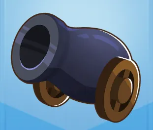
BombardeiroPrimeiro caminho Bombas maiores Bombas pesadas Bombas realmente grandes Impacto de balões Esmagamento de balões Segundo caminho Recarga rápida Lançador de mísseis Destruidor de MOAB Assassino de MOAB Eliminador de MOAB Terceiro caminho Alcance extra Bombas fragmentadas Bombas em grupo Grupo recursivo Blitz de bombas Paragon Ballistic Obliteration Missile Bunker 
Cospe tachinhaPrimeiro caminho Disparos rápidos Disparos ainda mais rápidos Tachinhas quentes Anel de fogo Anel infernal Segundo caminho Tachinhas de longo alcance Tachinhas de alcance superior Lançador de lâminas Redemoinho de lâminas Super redemoinho Terceiro caminho Mais tachinhas Ainda mais tachinhas Dispersor de tachinhas Sobrecarregado A zona das tachinhas Paragon Crucible of Steel and Flame 
Macaco de geloPrimeiro caminho Permafrost Estalo frio Fragmentos de gelo Fragilização Super frágil Segundo caminho Congelamento aprimorado Congelamento profundo Vento ártico Tempestade de neve Zero absoluto Terceiro caminho Raio maior Recongelamento Canhão criogênico Estalactites Empalador de gelo Paragon Herald of Everfrost 
Cospe colaPrimeiro caminho Cola absorvente Cola corrosiva Dissolvedor de balões Liquefator de balões O solucionador de balões Segundo caminho Glóbulos maiores Dispersão de cola Mangueira de cola Ataque de cola Tempestade de cola Terceiro caminho Cola mais forte Cola pegajosa Cola MOAB Super cola Cola imobilizadora 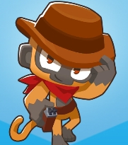
PistoleiroPrimeiro caminho Saque rápido Confronto Big Iron Gêmeos seis O sol ardente Segundo caminho Olho de águia Precisão Olho mortal Caçador de recompensas Justiça dourada Terceiro caminho Andarilho Nômade Executor Vingador O fantasma do deserto 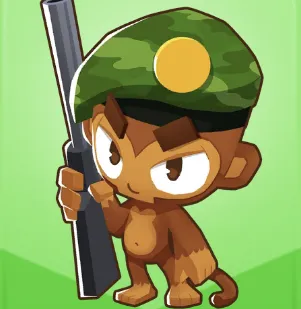
Macaco AtiradorPrimeiro caminho Jaqueta de metal completa Calibre grande Precisão mortal Ferimento MOAB Paralisador MOAB Segundo caminho Óculos de visão noturna Tiro de estilhaços Bala ricocheteante Suprimentos Atirador de elite Terceiro caminho Disparo rápido Disparo muito rápido Disparo semi-automático Atirador de elite aprimorado Defensor de elite Paragon S.P.I.D.E.R. Monkey 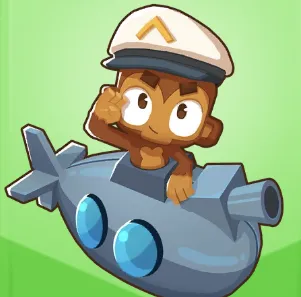
Macaco subPrimeiro caminho Alcance maior Inteligência avançada Submergir e apoiar Reator de bloontônio Energizador Segundo caminho Dardos farpados Dardos aquecidos Míssil balístico Capacidade de primeiro ataque Ataque preventivo Terceiro caminho Sonar Escaneamento de bloons Submarino de apoio Comandante submarino Subcomandante Paragon Nautic Siege Core 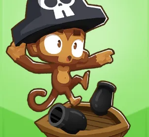
Macaco BucaneiroPrimeiro caminho Disparos rápidos Disparo duplo Destruidor Porta-aviões Nau capitânia Segundo caminho Disparo de uva Disparo quente Navio canhoneiro Piratas macacos Senhor dos piratas Terceiro caminho Alcance maior Navio mercante Comerciante de balões Império comercial Grande mercado Paragon Navarch of the Seas 
Macaco ásPrimeiro caminho Disparo rápido Muito mais dardos Avião de combate Operação: Tempestade de dardos Destruidor dos céus Segundo caminho Abacaxi explosivo Avião espião Ás bombardeiro Zona zero Tsar Bomba Terceiro caminho Alcance maior Dardos de neblina Esquadrão de caça Fortaleza voadora Fortaleza voadora aprimorada Paragon Goliath Doomship 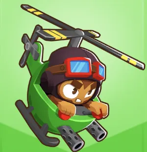
helicópteroPrimeiro caminho Quatro dardos Perseguição Rotores afiados Nave Apache Apache Prime Segundo caminho Jatos maiores IFR Corrente descendente Chinook de apoio Operações especiais Terceiro caminho Dardos rápidos Disparos rápidos Empurrão MOAB Defesa Comanche Comandante Comanche 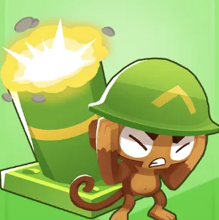
Macaco morteiroPrimeiro caminho Explosão maior Destruidor de balões Choque de projéteis O grande O maior de todos Segundo caminho Recarga rápida Recarga acelerada Projéteis pesados Bateria de artilharia Choque e pavor Terceiro caminho Precisão aprimorada Coisas incendiárias Sinalizador Projéteis destrutivos Incinerador de balões 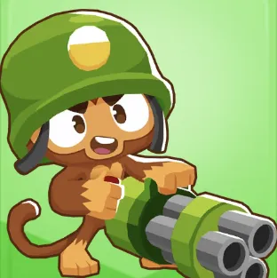
Arma de dardosPrimeiro caminho Mira focada Choque laser Canhão laser Acelerador de plasma Raio da perdição Segundo caminho Mira avançada Rotação rápida do cano Foguetes Hydra Tempestade de foguetes M.A.D. Terceiro caminho Alcance maior Foguetes de choque Artilharia pesada Artilharia de precisão Zona de exclusão de balões 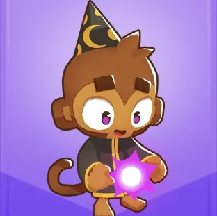
Macaco magoPrimeiro caminho Magia guiada Explosão arcana Domínio arcano Espinho arcano Arquimago Segundo caminho Bola de fogo Parede de fogo Sopro do dragão Invocar fênix Senhor da fênix Terceiro caminho Magia intensa Sentido de macaco Brilho mágico Necromante Príncipe das trevas Paragon Magus Perfectus 
Super macacoPrimeiro caminho Disparos laser Disparos de plasma Avatar do sol Templo do sol Verdadeiro deus do sol Segundo caminho Alcance superior Alcance épico Macaco robótico Terror tecnológico O anti-balões Terceiro caminho Empurrão Visão ultravioleta Cavaleiro sombrio Campeão sombrio Lenda da noite 
Macaco ninjaPrimeiro caminho Disciplina ninja Shurikens afiadas Disparo duplo Bloonjitsu Grande mestre ninja Segundo caminho Distração Contraespionagem Táticas Shinobi Sabotagem de balões Grande sabotador Terceiro caminho Shuriken perseguidora Estrepes Bomba de clarão Bomba adesiva Mestre das bombas Paragon Ascended Shadow 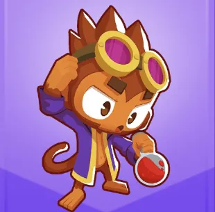
AlquimistaPrimeiro caminho Poções maiores Mistura ácida Poção berserker Estimulante mais forte Poção permanente Segundo caminho Ácido mais forte Poções corrosivas Ouro dos balões Balões de borracha dourada Grande alquimista dos balões Terceiro caminho Arremesso rápido Piscina ácida Concoção instável Tônico transformador Transformação total 
DruidaPrimeiro caminho Espinhos resistentes Coração de carvalho Druida da selva Recompensa da selva Espírito da floresta Segundo caminho Enxame de espinhos Coração do trovão Druida da tempestade Bola elétrica Supertempestade Terceiro caminho Alcance druídico Coração da vingança Druida da ira Poplust Avatar da ira Paragon Root of All Nature 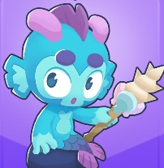
MacaquáticoPrimeiro caminho Eficiência do tridente Agilidade do tridente Habitante do abismo Guerreiro abissal Senhor do abismo Segundo caminho Melodia harmoniosa Harmonia aprimorada Canção encantadora Sinfonia mágica Maestro das profundezas Terceiro caminho Alcance aquático Corrente marítima Redemoinho Vórtice oceânico Tempestade das profundezas 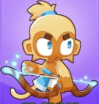
GuardacéuPrimeiro caminho Skywarden Segundo caminho Skywarden Terceiro caminho Skywarden 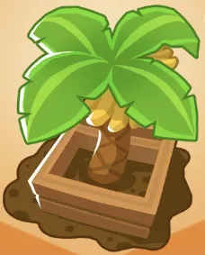
FazendaPrimeiro caminho Produção aumentada Produção maior Plantação de bananas Centro de pesquisa de bananas Central de bananas Segundo caminho Bananas de longa duração Bananas valiosas Banco de macacos Empréstimo IMF Macaco-nomics Terceiro caminho Coleta facilitada Recuperação de bananas Mercado Mercado central Wall Street dos macacos 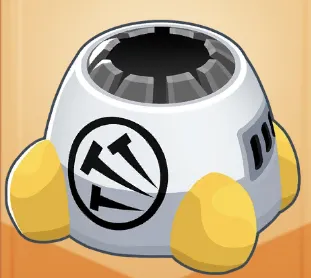
Usina de espinhosPrimeiro caminho Pilhas maiores Espinhos incandescentes Bolas de espinhos Minas de espinhos Super minas Segundo caminho Produção rápida Produção muito rápida Destruidor de MOAB Tempestade de espinhos Tapete de espinhos Terceiro caminho Alcance maior Espinhos inteligentes Espinhos duradouros Espinhos permanentes Espinhos mortais Paragon Mega Massive Munitions Factory 
Vila macacoPrimeiro caminho Raio maior Tambores da selva Treinamento primário Mentoria primária Especialidade primária Segundo caminho Bloqueador de crescimento Radar scanner Agência de inteligência dos macacos Às armas Defesa da pátria Terceiro caminho Negócios de macacos Comércio de macacos Cidade dos macacos Metrópole dos macacos Monkeyopolis 
Macaco engenheiroPrimeiro caminho Sentinela Engenharia rápida Engrenagens Especialista em sentinelas Campeão das sentinelas Segundo caminho Área de serviço maior Desconstrução Espuma de limpeza Superacelerador Ultraboost Terceiro caminho Pregos maiores Imobilização Arma dupla Armadilha de balões Armadilha XXXL Paragon Master Builder 
Domador de ferasPrimeiro caminho Piranha Barracuda Grande tubarão-branco Orca Megalodonte Segundo caminho Condor Águia Águia gigante Águia lendária Águia suprema Terceiro caminho Velociraptor Raptor Espinossauro Tiranossauro rex Gigantossauro